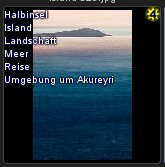

In die Vorschaubilder können unterschiedliche Kennzeichnungen eingeblendet sein. Diese sind hier beschrieben.
Erscheint rechts unten ein rotes Quadrat, existiert die Datei nicht mehr im Ordner, unter dem sie in die Datenbank eingelesen wurde.
Dies kann der Fall sein, sofern Sie Dateien sehen, die nicht die Dateien eines Ordners sind (Kartenreiter Ordner oder Favoriten), also Ergebnis einer Suche, der Auswahl eines Stichworts usw.
Speichern Sie Ihre Bilder auf Wechselfestplatten, die nicht dauerhaft angeschlossen sind, ist dies nicht unüblich.
Falls die Datei im Ordner nicht mehr existieren wird, können Sie diese aus der Datenbank löschen:
Wählen Sie im Menü Ansicht > Metadaten einblenden, werden ausgewählte Metadaten über das Bild eingeblendet:
